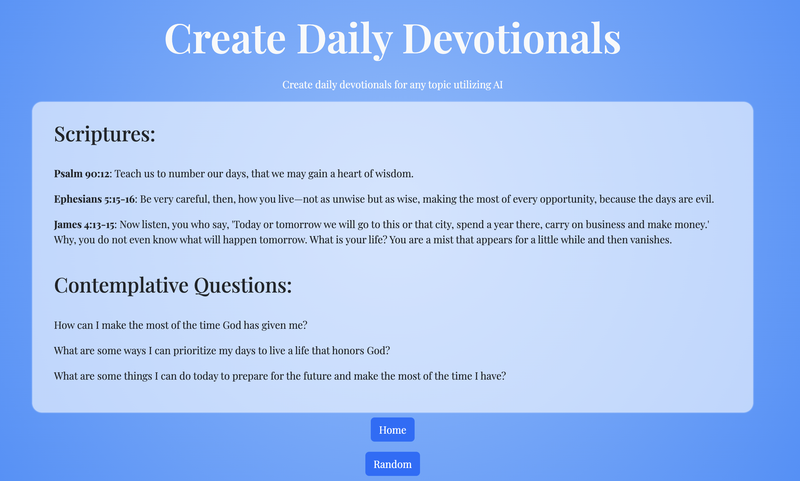
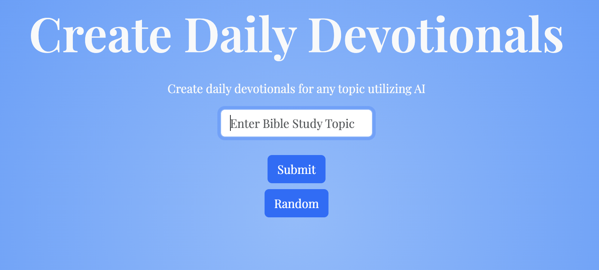

~ back 2025-03-14 ~ project ~ devotionail This is a basic llama3 wrapper that I wrote about a year ago. It seems really elementary now that there are such great, free open source models out there to call. Either way, it's been running for all of that time with basically no usage. I am using fly.io, running python for the backend and the frontend sits on vercel. Check it out - link Generating a devotional about time Landing page